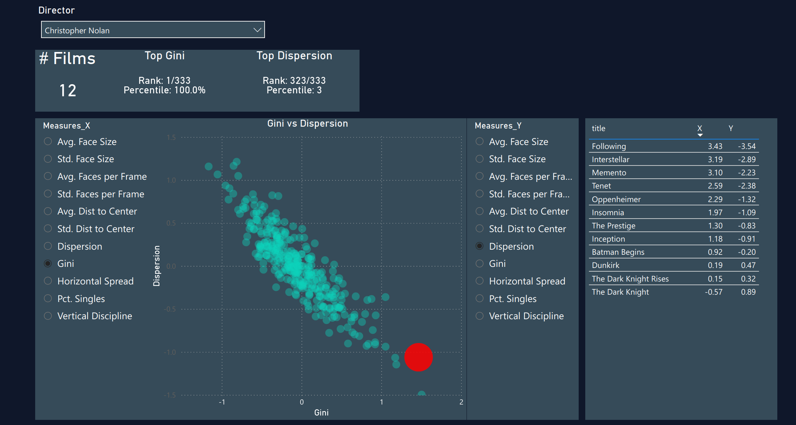
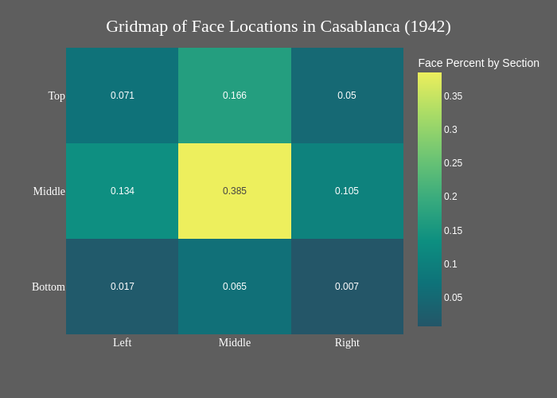

CineStat
A portal for cinema statistics and data visualization. A work in progress.
Explore Features ↓Live Dashboard
Interact with cross-filtered charts, box office metrics, and custom statistical layouts built directly from our movie databases.
Open Live Dashboard →
Deep-Dive Articles
Empirical film analysis and essays. We look at trends in aspect ratios, staging, framing metrics, and distribution models over cinema history.
Read Articles →
Open Data
Cleaned datasets hosted transparently. Access raw pipeline outputs and tables via Hugging Face to run your own custom scripts.
Download Datasets →